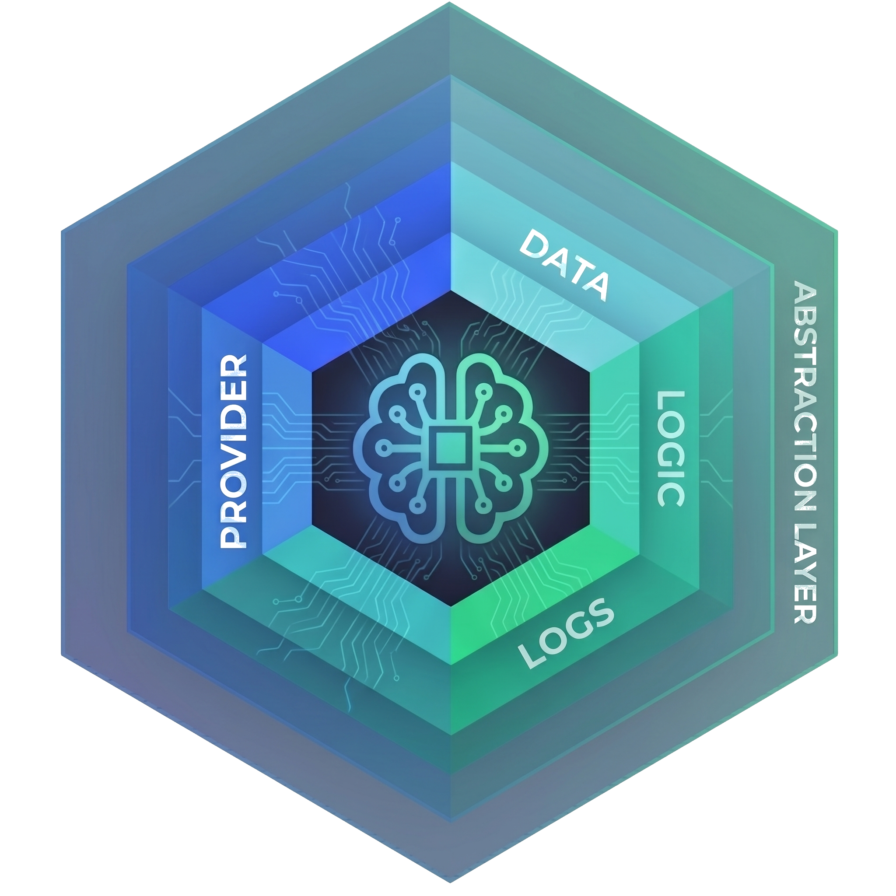

AbstractCore
AbstractCore is an offline-capable, open-source-first LLM layer for Python. One create_llm(...) API works across local runtimes, self-hosted servers, cloud APIs and OpenAI-compatible gateways. Use it in your Python code, or run it as an OpenAI-compatible /v1 server with a web console that picks, downloads and runs local models that fit your machine.
pip install "abstractcore[server]"
abstractcore serve
# open the printed link: http://127.0.0.1:8000/console#claim=...One API, every provider
Your application code stays the same while the model underneath moves between local runtimes, your own inference server and hosted APIs. The default install is small; providers and optional features come as extras.
Ten providers behind create_llm()
Local and open-weight backends are first-class. Cloud and gateway providers are optional.
- ✓ Local servers:
ollama,lmstudio,vllm,openai-compatible - ✓ In-process:
mlx(Apple silicon),huggingface(Transformers and GGUF) - ✓ Cloud APIs:
openai,anthropic - ✓ Gateways:
openrouter,portkey - ✓ No silent downloads: you fetch local weights on purpose (
abstractcore models download ...), then run without internet
from abstractcore import create_llm
# Local model on Apple silicon (MLX). Any provider works the same way, e.g.
# create_llm("openai", model="gpt-5-mini") or create_llm("ollama", model="qwen3:4b").
llm = create_llm("mlx", model="mlx-community/Qwen3.5-4B-4bit")
response = llm.generate("In two sentences, what is a durable workflow runtime?")
print(response.content)abstractcore command and its apps on your PATH (commands you get), so you already have them after an install. Install AbstractCore on its own, as below, when you only need the LLM layer in your own Python environment.Pick, download and run a model that fits
abstractcore serve starts the server on 127.0.0.1:8000, creates its own bearer token on first run and prints a one-time link to AbstractCore’s own web console. The console shows what this machine can run and installs engines with one confirmation. Every action shows the matching command. AbstractGateway has its own consoles; both pairs share the Models and Engines screens.
| Console tab | What you can do | Command |
|---|---|---|
| Overview | See this machine: OS, accelerator, memory and the usable model-memory ceiling, free disk, engines summary, server health. | abstractcore host profile --json |
| Models | Browse the catalog with fit badges, download a model in a click, see installed models and their sizes, delete weights, follow job progress. | abstractcore models download, models list, models delete |
| Engines | Install Ollama, LM Studio, MLX or llama.cpp with one confirmation that shows the exact command; check vLLM and Hugging Face too. | abstractcore engines status --probe, engines install <id> |
| Providers | Read the provider list and the configured capability defaults. | abstractcore config providers --probe |
The same from a terminal
Everything the console does is a command. For a keyboard-first screen, AbstractCore’s terminal console, the abstractcore-console crate (v0.4.0, Rust 1.87+, built on AbstractTUI), has the same Models and Engines screens and also edits your default models, providers, API keys and capability routes.
- ✓ Lost the link?
abstractcore serve --claim-url --port 8000prints a fresh one (valid 10 minutes, one use) - ✓ API keys and default models are set on the host with
abstractcore --config
abstractcore host profile # accelerator, memory ceiling, free disk
abstractcore models catalog --fits # models that fit this machine
abstractcore models download ollama qwen3:8b
abstractcore models list # installed models, with sizes
abstractcore models verify qwen3:8b --provider ollama
abstractcore engines status --probe
abstractcore engines install ollama --dry-run # the exact command
cargo install abstractcore-console # terminal console
abstractcore-consoleFit verdicts
Each catalog entry gets an advisory verdict that compares the memory the model needs (weights, context cache and overhead) with the usable ceiling of this machine.
| Verdict | Meaning |
|---|---|
fits | Runs with headroom. |
tight | Runs, with little headroom. |
partial_offload | CUDA only: too big for VRAM, fits VRAM plus part of RAM (slower). |
needs_gpu_limit | Apple silicon: does not fit the current GPU memory limit, but fits once macOS lets the GPU use more. The verdict carries the exact command, for example sudo sysctl iogpu.wired_limit_mb=117760; the setting lasts until the Mac restarts, and both consoles print it. |
too_large | Does not fit. |
unknown | No size or parameter count, or no measurable ceiling. |
engine_missing with the engine, the reason and an install command for this interpreter. That is different from route_unavailable (this host cannot run the engine at all) and from weights that are not downloaded yet.What you get
The parts that usually break when you move beyond one hosted API: tool syntax, structured output, media support, token budgets and caching.
Universal tool calling
Decorate functions with @tool. Native and prompted tool syntax are normalized. Core is pass-through by default (execute_tools=False): it returns response.tool_calls and your host or runtime decides how to run them.
Structured output
Pass a Pydantic model as response_model= and get a typed object back, with provider-aware strategies and retry.
Input: text, images, audio, video, documents
Attach files with media=[...] next to your prompt (abstractcore[media]). Nothing is changed silently: images go to a vision-capable model, or a text-only model gets short observations from a configured vision fallback; audio follows audio_policy (speech to text through AbstractVoice); video follows video_policy (native video, or sampled frames sent through the vision path).
Output: text, voice, music, images, video, 3D
The same generate(..., output=...) returns speech and voice clones, music, images with edits and upscales, text-to-video and image-to-video, and 3D scenes through capability plugins. Text-only generate() is unchanged.
Capability plugins
llm.voice and llm.audio (AbstractVoice), llm.music (AbstractMusic), llm.vision (AbstractVision), llm.scene3d (Abstract3D, text and image to 3D) and llm.camera (AbstractCamera, real-camera piloting).
Native MLX runtime
In-process Qwen3.8 inference with vision, selectable MTP depth, concurrent requests and prefix reuse. Stop any generation with cancel_event=.
Embeddings
EmbeddingManager for semantic search and RAG, with local models or Ollama, LM Studio, OpenAI, OpenRouter, Portkey and OpenAI-compatible endpoints.
Sessions and prompt caching
BasicSession keeps conversation state; prompt caching, events, interaction tracing and retry hooks help you run it in production.
MCP, glyphs, CLI apps
Use MCP (Model Context Protocol) servers, over HTTP or stdio, as tool sources, compress long documents into images for vision models (glyphs), and use the built-in summarizer, extractor, judge, intent and deepsearch apps.
from abstractcore import create_llm
llm = create_llm("ollama", model="qwen3:4b")
for chunk in llm.generate("Write a short poem about distributed systems.", stream=True):
print(chunk.content or "", end="", flush=True)from abstractcore import create_llm, tool
@tool
def get_weather(city: str) -> str:
return f"{city}: 22°C and sunny"
llm = create_llm("openai", model="gpt-4o-mini")
resp = llm.generate("What's the weather in Paris? Use the tool.", tools=[get_weather])
print(resp.content)
print(resp.tool_calls) # structured calls; your host decides how to run themfrom pydantic import BaseModel
from abstractcore import create_llm
class Answer(BaseModel):
title: str
bullets: list[str]
llm = create_llm("openai", model="gpt-4o-mini")
answer = llm.generate("Summarize HTTP/3 in 3 bullets.", response_model=Answer)
print(answer.bullets)# Once: abstractcore config set-default output.image --provider mlx-gen --model AbstractFramework/flux.2-klein-4b-8bit
# abstractcore config set-default output.voice --provider supertonic --model supertonic-3
# (or the gateway console's "Use recommended defaults", which writes the same store)
from abstractcore import create_llm
llm = create_llm("mlx", model="mlx-community/Qwen3.5-4B-4bit")
image = llm.generate("A watercolor illustration of a lighthouse on a rocky coast at dawn, "
"soft light, calm sea, seagulls in the distance", output="image")
open("lighthouse.png", "wb").write(image.outputs["image"][0].data)
speech = llm.generate(text="AbstractFramework: write once, generate everything, run anywhere.",
output="voice")
open("tagline.wav", "wb").write(speech.outputs["voice"][0].data)# pip install "abstractcore[embeddings]"
from abstractcore.embeddings import EmbeddingManager
embedder = EmbeddingManager() # local all-MiniLM-L6-v2 by default
embedding = embedder.embed("Machine learning transforms how we process information")
print(len(embedding))
print(embedder.compute_similarity("artificial intelligence", "machine learning"))An OpenAI-compatible /v1 endpoint
Apps that already speak the OpenAI API can use any provider through AbstractCore: route with model="provider/model". Optional /v1/images/*, /v1/videos/* and /v1/audio/* routes serve generated media, and Swagger UI is at /docs.
Authenticated by default
On your own machine the server creates its bearer token on first run and keeps it readable by you only. On a network, set ABSTRACTCORE_AUTH_TOKEN yourself and pass --host 0.0.0.0.
- ✓
abstractcore serve --print-tokenprints the token for API clients - ✓
abstractcore-endpointserves one provider and model per worker - ✓ Docker:
ghcr.io/lpalbou/abstractcore-server:2.18.0, built from PyPI withabstractcore[server,remote,media,tokens,compression](remote providers; no local engines)
pip install "abstractcore[server]"
abstractcore serve # 127.0.0.1:8000
export ABSTRACTCORE_AUTH_TOKEN="$(abstractcore serve --print-token)"
curl -X POST http://localhost:8000/v1/chat/completions \
-H "Content-Type: application/json" \
-H "Authorization: Bearer $ABSTRACTCORE_AUTH_TOKEN" \
-d '{"model": "ollama/qwen3:4b",
"messages": [{"role": "user", "content": "Hello!"}]}'import os
from openai import OpenAI
client = OpenAI(base_url="http://localhost:8000/v1",
api_key=os.environ["ABSTRACTCORE_AUTH_TOKEN"])
resp = client.chat.completions.create(
model="ollama/qwen3:4b",
messages=[{"role": "user", "content": "Hello!"}],
)
print(resp.choices[0].message.content)Choose the smallest install
The base install covers Ollama, LM Studio, OpenRouter, Portkey and OpenAI-compatible endpoints with no SDK. Extras compose: pip install "abstractcore[remote,media,tools]".
| Extra | What it adds |
|---|---|
remote | OpenAI and Anthropic SDKs (or openai / anthropic alone) |
huggingface | Transformers and torch (heavy) |
apple / mlx | Apple silicon local LLM stack (heavy) |
gpu / vllm | GPU local LLM stack (heavy) |
tools | Built-in web tools (web_search, skim_websearch, skim_url, fetch_url) |
media | Images, PDFs, Office documents |
voice, music, vision, scene3d | Capability plugins: AbstractVoice, AbstractMusic, AbstractVision, Abstract3D (AbstractCamera: pip install abstractcamera) |
compression | Glyph visual-text compression |
embeddings | EmbeddingManager and local embedding models |
tokens | Precise token counting (tiktoken) |
server | OpenAI-compatible HTTP server and web console |
all-apple / all-gpu | Full local environment: remote SDKs, HF/GGUF, MLX or vLLM, features, server (Python 3.11+) |
Music defaults to the lightweight remote ACE Music backend: set ACEMUSIC_API_KEY before use. Local music engines are optional plugin extras. To upgrade a library install, run pip install -U with the same extras, for example pip install -U "abstractcore[server]"; an installer install upgrades with the framework (Upgrade).